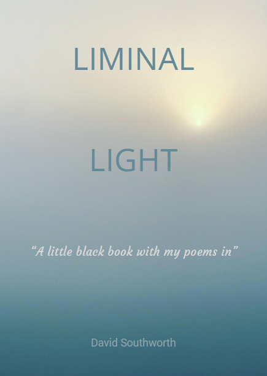

Free guided meditations for stillness, grounding, and a deeper trust in yourself. Available anytime, anywhere.
Six guided meditations — press play, no sign-up needed.
A quiet space to slow down and turn gently inward. Using the sea as a mirror, this meditation invites you to notice the deeper movements of your inner landscape — calm and restlessness, light and shadow — with openness and without judgement.
A companion poem from Liminal Light
Trusting the ocean, there is no fear of the waves Waves are part of it Ache remembers tears of jelly fish That time I asked if still there and God rose onto two feet with a galloping sound overtaking crashing waves
— The Sea is my Therapist
A sensory grounding exercise — five things you can see, four you can feel, three you can hear, two you can smell, one you can taste. Moving through the senses deliberately interrupts the loop of worry and brings you back to where you actually are.
A companion poem from Liminal Light
The ocean is always in view, the changing colours, the sky never the same. Its beauty is not in scarcity, but in abundance. Yet the waves hide the dolphins, the whales, the seals. Yet, we know, that they are there.
— Scremerston
A guided journey into yogic sleep — a state of conscious deep rest between waking and sleeping. Lying still at the edge of the sea, this practice moves gently through the body, releasing tension layer by layer and dissolving into a profound stillness beneath thought.
Using the image of a car windscreen and wipers, this meditation invites you to notice what you are carrying and watch thoughts move across the glass — clearing, filling, clearing again. Nothing is forced away. A specific concern is rested on the glass, then moved aside by the wiper's natural motion.
At the edge of the sea, you are guided to bring one specific thing to mind — a worry, a weight, something unresolved — and carry it to the water and set it down. The sea receives it without judgement. The meditation closes with empty hands, quiet breath, and the reminder that some things can be placed down and left for a while.
Some experiences ask to be fixed. Others simply ask to be noticed. This meditation invites you to sit with whatever is present — not to change it, not to understand it, but to remain with it gently. Using the sound of the sea as a steady background, it explores the quiet space between you and your experience, and the stillness that is always already there.
A companion poem from Liminal Light
Cannot see where the land stops and the sky starts Grey drizzle matching my mood, moves in with the crying seagulls The therapy of the sea lifts my mood, though it's not beach weather. Now, the line is back, a boundary in place, my mood lifting, but not to the sky Yet it's brighter.
— No Line on the Horizon
Sometimes what helps most is less choice, not more. These six meditations are designed to meet you where you are, without the pressure of a library you'll never finish. No sign-up, no cost, no streaks. Just press play.
David is also the author of Liminal Light, a poetry collection featuring the same coast. Available on Amazon.

Liminal Light